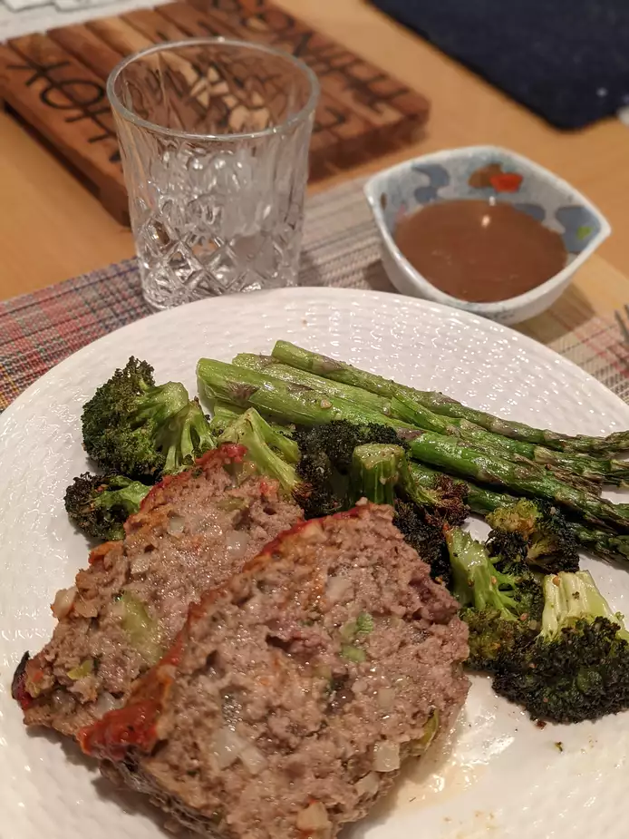

Easy Meatloaf
This is a very easy and no fail recipe for meatloaf. It won't take long to make at all, and it's quite good!

Brief description
Meatloaf has always been a top pick for people of any age classs. Easy to work around and achieve your desired taste. Click here for a very short and descriptive video on how to make an easy meatloaf
- Prep: Not available
- Cook: Not available
- Total: Not available
- Yield: 8 servings
Ingredient Checklist
Note: Default quantity yields 8 servings
Follow the cooking steps below:
- Preheat oven to 350 degrees F (175 degrees C).
- In a large bowl, combine the beef, egg, onion, milk and bread OR cracker crumbs. Season with salt and pepper to taste and place in a lightly greased 9x5-inch loaf pan, or form into a loaf and place in a lightly greased 9x13-inch baking dish.
- In a separate small bowl, combine the brown sugar, mustard and ketchup. Mix well and pour over the meatloaf.
- Bake at 350 degrees F (175 degrees C) for 1 hour.
Nutrition Facts
Per Serving: 372 calories; protein 18.2g; carbohydrates 18.5g; fat 24.7g; cholesterol 98mg; sodium 334.6mg.
Whoo! Enjoy your meal.